数字图像处理：期末复习
Last updated on December 30, 2025 pm
本文为 SJTU-CS3324 数字图像处理课程的期末复习。
Lecture 1: Introduction
- 相比于计算机视觉，本课程聚焦于像素层面（pixel-level） 的图像处理和分析。
- 本课程运用信号处理的方法，对图像进行分析和理解。
- 本课程的基础是人眼视觉的机制和特点。
Lecture 2: Digital Image Fundamentals
图像处理任务的层级
- 低级处理 (Low-level Processing): 主要在像素级 (Pixel level) 进行操作，通常不需要对图像内容进行理解
- 图像增强 (Image Enhancement): 如锐化、去噪、同态滤波等
- 图像复原 (Image Restoration)、图像压缩 (Image Compression)、图像分割 (Image Segmentation)
- 中/高级处理 (Middle-level & High-level Processing):
- 图像分析 (Image Analysis)、图像识别 (Image Recognition)、图像理解 (Image Comprehension)
- 模式识别 (Pattern Recognition)、计算机视觉 (Computer Vision)
本课程聚焦于低级和中级（主要是低级） 的图像处理。
图像通信系统 (Image Communication System)
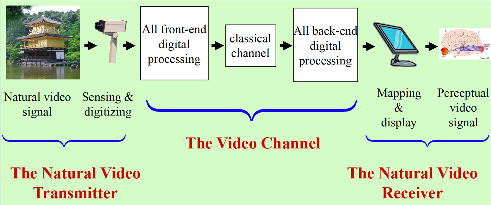
- 自然视频发送端 (The Natural Video Transmitter):
- 自然视频信号 (Natural video signal): 现实世界中的连续光信号
- 感知与数字化 (Sensing & digitizing): 通过摄像机等传感器捕捉光信号，并将其数字化（采样和量化），转换为数字信号
- 视频信道 (The Video Channel):
- 前端数字处理 (All front-end digital processing): 在传输前对数字信号进行处理，最典型的就是信源编码（图像压缩）
- 经典信道 (classical channel): 指的是存储媒介（如硬盘、光盘）或传输网络（如互联网、无线网络），数据在这个环节可能会引入错误或丢失
- 后端数字处理 (All back-end digital processing): 接收到数据后进行的处理，最典型的就是信源解码（图像解压）和纠错
- 自然视频接收端 (The Natural Video Receiver):
- 映射与显示 (Mapping & display): 将解码后的数字信号转换为可以在显示器上显示的模拟信号
- 感知视频信号 (Perceptual video signal): 最终的信号被人眼的视觉系统接收，并在大脑中形成感知
前端涉及的图像处理技术
前端处理的目标是加工原始的数字图像/视频，使其更适合传输或存储。核心任务是减少数据量（压缩）和为后续处理做准备。
涉及的主要技术包括：
-
图像增强 (Image Enhancement):
- 目的: 改善图像的视觉质量，突出重要信息，或抑制干扰。这通常是很多处理流程的第一步。
- 技术:
- 对比度增强: 如直方图均衡化，用于改善光照不均或欠曝/过曝的图像。
- 去噪: 使用空间域滤波器（如均值滤波、中值滤波）或变换域滤波器（如小波去噪）来去除传感器引入的噪声。
- 锐化: 使用拉普拉斯算子等方法，在压缩前适度增强图像细节，以补偿压缩可能带来的模糊。
-
图像分割 (Image Segmentation):
- 目的: 将图像划分为不同的区域或物体。这在基于对象 (Object-based) 的压缩或分析中至关重要。
- 技术:
- 边缘检测: 如Canny算子，用于提取物体轮廓。
- 区域生长/阈值分割: 用于分离前景和背景。在视频监控等场景中，首先分割出运动物体，然后只对运动物体区域进行编码。
-
特征提取 (Feature Extraction):
- 目的: 从图像中提取关键的、紧凑的描述信息。
- 技术: 在一些高级的压缩方案（如模型编码）或内容分析应用中，可能会提取如SIFT、SURF等特征点，或者人脸的关键点等。
-
图像压缩 (Image Compression) - 核心中的核心:
- 目的: 极大地减少表示图像所需的数据量。
- 技术 (信源编码):
- 变换编码: 如 DCT (用于JPEG, MPEG系列) 和 小波变换 (DWT) (用于JPEG2000)，通过能量聚集来去除空间冗余。
- 预测编码:
- 帧内预测: 去除单帧图像内的空间冗余。
- 帧间预测 (运动估计与补偿): 去除视频序列中相邻帧之间的时间冗余。
- 量化: 对变换系数或预测误差进行量化，这是实现高压缩率的有损步骤。
- 熵编码: 如哈夫曼编码或算术编码，对量化后的符号进行最终的无损压缩，消除编码冗余。
-
信道编码 (Channel Coding):
- 目的: 增加可控的冗余（如奇偶校验、CRC、前向纠错码），以使数据流能够抵抗在物理信道中传输时可能发生的比特错误。严格来说这属于通信领域的技术，但在整个系统中是前端处理的重要一环。
后端涉及的图像处理技术
后端处理的目标是复原和呈现接收到的数据。核心任务是解压缩和纠正可能出现的错误。
涉及的主要技术包括：
-
信道解码 (Channel Decoding):
- 目的: 检查接收到的数据流是否有错误，并根据信道编码的规则进行纠错或检错（如果错误无法纠正，则可能请求重传或进行错误隐藏）。
-
图像解压缩 (Image Decompression) - 核心中的核心:
- 目的: 从压缩码流中重建图像或视频。
- 技术 (信源解码): 它是压缩过程的逆操作。
- 熵解码: 如哈夫曼解码或算术解码，从码流中解析出量化符号。
- 反量化: 将量化符号乘以量化步长，恢复变换系数或预测误差的近似值。
- 逆变换/预测重建:
- 逆变换: 如 IDCT 或 IDWT，将系数从变换域转换回空间域。
- 运动补偿与重建: 在视频解码中，根据接收到的运动向量，在已解码的参考帧上进行运动补偿，生成预测帧，然后与解码出的预测误差相加，得到最终的重建帧。
-
图像复原 (Image Restoration):
- 目的: 进一步处理解压后的图像，以减轻压缩或传输过程中引入的失真。
- 技术:
- 去块效应滤波 (Deblocking Filter): 在所有现代视频解码器中都是标准配置。用于平滑基于块的压缩（如H.264/AVC）所产生的块边界上的马赛克效应。
- 去振铃效应: 减轻由于高频系数被粗暴量化而产生的边缘振铃（Gibbs现象）。
- 错误隐藏 (Error Concealment): 如果信道解码发现数据包丢失且无法恢复，解码器会尝试用周围时空上有效的信息来“猜测”和“填补”丢失的图像块，以避免出现大的马赛克或黑屏。
-
图像增强 (Post-processing Enhancement):
- 目的: 在显示前，根据用户的偏好或显示设备的能力，对重建的图像进行最终的视觉优化。
- 技术:
- 锐化: 适度增强图像边缘，使其看起来更清晰。
- 色彩校正/饱和度调整: 调整颜色，使其更鲜艳或更符合特定的色调。
- 超分辨率 (Super-Resolution): 在某些高级应用中，可能会使用深度学习等技术，将解码出的低分辨率视频“放大”成高分辨率版本。
图像质量评价 (Image Quality Assessment)
- 主观质量评价 (Subjective Quality Assessment): 直接由人类观察者对图像质量进行评分
- 核心指标:
- MOS (平均主观意见分, Mean Opinion Score): 让一组观察者对图像质量进行评分，然后取平均值
- 优点: 最可靠，是评价图像质量的金标准
- 缺点: 成本高、耗时长、过程复杂、结果易受环境和观察者状态影响
- 核心指标:
- 客观质量评价 (Objective Quality Assessment): 通过设计数学算法来自动计算图像的质量分数，以模拟人的主观评价结果
- 分类 (根据对原始参考图像的依赖程度):
- 全参考 (Full-Reference, FR): 在评价时，需要一个无失真的原始参考图像进行对比
- MSE (均方误差, Mean Square Error): 计算失真图像与原始图像之间每个像素差值的平方和的均值
- PSNR (峰值信噪比, Peak Signal Noise Ratio): 基于 MSE 计算得来，是一个对数值，单位是分贝(dB)；PSNR 值越高，通常代表失真越小
- SSIM (结构相似性, Structural Similarity Index): 是一个更先进的全参考指标，它同时从亮度、对比度和结构三个方面来比较图像的相似性，比 PSNR 更符合人眼感知
- 无参考 (No-Reference, NR) / 盲评 (Blind): 在评价时，不需要原始参考图像，直接对失真图像进行分析并给出质量分数。
- 弱参考 (Reduced-Reference, RR): 介于全参考和无参考之间，评价时需要从原始图像中提取的部分特征信息，而不是整张原始图像
- 全参考 (Full-Reference, FR): 在评价时，需要一个无失真的原始参考图像进行对比
- 优点: 计算简单、可重复、客观
- 缺点: 常常与人的主观感受不完全匹配
- 分类 (根据对原始参考图像的依赖程度):
采样 (Sampling) 与量化 (Quantization)
采样 (Sampling)
- 定义: 对图像在空间坐标上进行离散化，形成像素
- 空间频率:
- 图像的细节对应高空间频率，亮度变化快，复杂度高
- 平滑区域对应低空间频率，亮度变化慢，复杂度低
- 采样定理: 如果采样频率大于或等于信号最高频率的两倍，就可以从采样得到的离散点中无失真地恢复出原始的连续信号
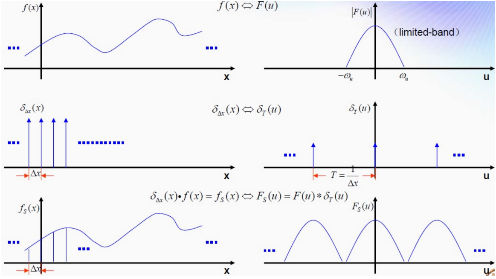
量化 (Quantization)
- 定义: 对图像中每个像素的亮度进行离散化的过程
- 特点: 量化是一种有损操作，是图像信息损失的主要来源
辐射度学基础 (Radiometry Fundamentals)
- 视敏度: 人眼对不同波长光的敏感程度
- 峰值: 对波长为 555nm 的绿光最敏感
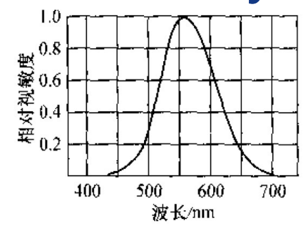
色度学基础 (Colorimetry Fundamentals)
HSI 色彩空间
- H (色调, Hue): 颜色的基本属性，即“是什么颜色”，如红色、绿色、蓝色等
- 通常用一个角度来表示（0° 到 360°）
- S (饱和度, Saturation): 颜色的纯度或鲜艳程度，表示颜色中掺入白光的比例
- 表示最纯粹、最鲜艳的颜色（如红色）
- 越小，颜色越不饱和（如浅红色）
- 表示完全不饱和（各种灰色、白色或黑色）
- I (强度, Intensity): 颜色的明亮程度，对应于我们常说的亮度
- 色度 (Chroma): 指 色调(H) 和 饱和度(S) 这两个参数的组合

RGB 色彩空间
这是在数字设备（如显示器、相机）中最常用的一种色彩模型。
- 加色模型 (Additive Model): RGB 是一种加色模型，适用于发光设备（如显示器）
- Red + Green = Yellow (黄)
- Green + Blue = Cyan (青)
- Blue + Red = Magenta (品红)
- Red + Green + Blue = White (白)
- 无光 = Black (黑)
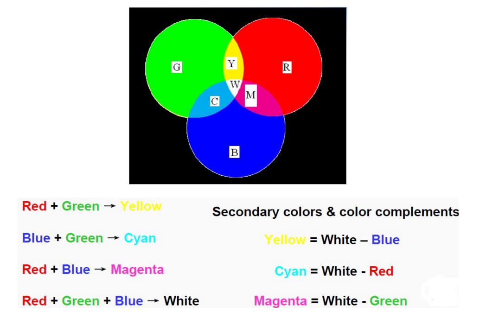
- 减色模型 (Subtractive Model): 与加色模型相对，在印刷和绘画领域使用的是减色模型（颜料是通过吸收特定波长的光来呈现颜色的）
人类视觉系统 (Human Visual System)
感光细胞
- 锥状细胞 (Cones): 负责明视觉 (Photopic Vision)，在光线充足的环境下工作
- 能够分辨颜色和高细节
- 有三种锥状细胞，比例不均匀，分别对红、绿、蓝光最敏感
- 主要集中在视网膜的中心区域——中央凹 (Fovea)
- 杆状细胞 (Rods): 负责暗视觉 (Scotopic Vision)，在光线昏暗的环境下工作
- 对光极其敏感，但无法分辨颜色，且分辨率较低
- 主要分布在视网膜的周边区域（中心凹附近没有）
分辨能力 (Resolving Power)
- 分辨率: 人眼对颜色细节的分辨能力远低于对亮度（灰度）的分辨能力
视觉错觉 (Visual Illusions)
- 马赫带效应 (Mach Bands): 在两个不同灰度级区域的交界处，人眼会在亮区一侧感知到一条更亮的“亮带”，在暗区一侧感知到一条更暗的“暗带”，尽管这些亮带和暗带在物理上并不存在
- 原因: 这是人眼视觉系统的一种边缘增强机制，有助于我们更好地分辨物体的轮廓
- 同时对比度 (Simultaneous Contrast): 一个灰色的方块，放在黑色背景下会比放在白色背景下看起来更亮
- 原因: 大脑在感知亮度时会进行“减去背景”的补偿
- 其他基于上下文的错觉:
- Adelson 棋盘错觉、白金蓝黑裙子: 都展示了大脑会根据对光照和阴影的假设，来修正我们对物体表面真实颜色（反射率）的判断
- 庞佐错觉 (Ponzo Effect)、斜塔错觉 (Leaning Tower Illusion): 展示了大脑会利用场景中的透视线索，来判断物体的大小和方向，即使这些判断与物理现实不符
Lecture 3: 2D Transforms of Image
图像变换的应用
- 二维离散傅里叶变换 (2D Discrete Fourier Transform - DFT): 图像增强、滤波、去噪、复原
- 二维离散余弦变换 (2D Discrete Cosine Transform - DCT): 图像压缩
- 沃尔什-哈达玛变换 (Walsh-Hadamard Transform): 图像压缩
- K-L变换 (Karhunen-Loeve Transform): 理论上性能最佳的变换
- 哈尔变换 (Haar Transform): 图像增强、压缩
- 小波变换 (Wavelet Transform): 图像增强、压缩、多分辨率处理、分割、描述
各种图像变换的思想
- DFT: 将图像表示为一系列不同频率、振幅和方向的正弦波的叠加
- DCT 与 DFT 的关系: 一个实数序列的 DCT，等价于将该序列与其镜像版本拼接构成一个偶对称序列后，再对其进行 DFT
- DCT 结果中的虚部（正弦项）会完全抵消，只剩下实部（余弦项），方便后续信号的表征
- KL 变换: 根据输入的图像样本，计算数据协方差矩阵的特征向量，选取与最大特征值对应的少数几个特征向量，将原始数据投影到这些向量上，以实现数据的降维和去相关

图像金字塔 (Image Pyramids)
图像金字塔用于在多个分辨率 (more than one resolution) 下表示同一张图像。
高斯金字塔 (Gaussian Pyramid)
- 思想: 构建一系列尺寸递减、模糊度递增的图像，代表了原始图像在不同尺度下的近似 (Approximation)
- 构建过程: 这是一个迭代的过程，从最底层的原始图像 开始，生成上一层的 ，再由 生成 ，依此类推。每一步都包含两个操作：
- 滤波 (Filtering): 使用一个低通滤波器（通常是高斯核或其近似）对当前层级的图像 进行卷积
- 这一步的目的是平滑图像，去除高频细节，以防止下一步降采样时产生混叠（Aliasing）
- 降采样 (Downsampling): 对滤波后的图像进行降采样（丢弃偶数行和偶数列），使其尺寸变为原来的 1/4，得到上一层图像
- 滤波 (Filtering): 使用一个低通滤波器（通常是高斯核或其近似）对当前层级的图像 进行卷积
拉普拉斯金字塔 (Laplacian Pyramid)
- 思想: 拉普拉斯金字塔中存储了高斯金字塔层间丢失的细节，也被称为残差金字塔
- 构建过程: 拉普拉斯金字塔的构建依赖于已经建好的高斯金字塔
- 取高斯金字塔中的较小层
- 上采样/扩展 (Expand/Upsampling): 将 的尺寸放大一倍，使其与下一层 的尺寸相同
- 这通常通过插入零值行列再进行插值滤波来完成
- 得到的结果 是 的一个模糊预测版本
- 计算差值: 用高斯金字塔中较清晰的图像 减去这个模糊的预测版本，得到的差值就是拉普拉斯金字塔的当前层
- 这个差值图像 就包含了从 降采样到 过程中丢失的高频细节信息，它看起来就像一张边缘图
Lecture 4: Image Enhancement
直方图 (Histogram)
- 定义: 直方图统计了每个灰度级（如 0 到 255）在像素中出现的频率
直方图均衡化 (Histogram Equalization) 与规定化 (Specification)
-
直方图均衡化: 找到一个灰度变换函数，使得处理后的图像其直方图尽可能地均匀（即每个灰度级出现的频率相等）
-
实现步骤:
- 计算原始图像的直方图 及其累积直方图
- 计算目标直方图 及其累积直方图
- 对于原始图像的每一个灰度级 ，在目标累积直方图 中寻找一个 ，使得 的值与 的值最接近
- 通常是
- 建立从 到 的映射关系
- 应用这个映射来变换整个图像
-
例题: 离散灰度级下的直方图规定化


中值滤波 (Median Filtering)
- 定义: 中值滤波器的输出 是其邻域 S 内所有像素 灰度值的中位数 (Median)
- 特性: 用于去除椒盐噪声
- 椒盐噪声（salt-and-pepper noise）表现为图像中孤立的纯白（255）或纯黑（0）像素点
- 在对邻域像素进行排序时，这些极端的噪声值通常会位于排序序列的两端，而中位数则取自序列的中间位置，因此能够非常有效地消除这些噪声点，而几乎不受其影响
伪彩色 (Pseudocolor) 与假彩色 (False Color)
- 伪彩色图像处理 (Pseudocolor Image Processing): 将灰度图像变换为 RGB 彩色图像（一对三）
- 思想: 人眼对色彩空间中色彩差异的感知程度，要高于对连续灰度等级差异的感知程度
- 假彩色图像处理 (False Color Image Processing): 将多光谱图像变换为 RGB 彩色图像（多对三）
- 应用: 可视化遥感、卫星成像，以突出显示特定的地物信息
双边滤波 (Bilateral Filter)
- 思想：为了解决边缘模糊问题，双边滤波在加权过程中要求，一个邻域像素 要想对中心像素 的最终值有显著贡献，必须同时满足 (1)空间上足够近，(2)像素值足够相似
- 实现: 每个邻域像素 的权重由两个独立项的乘积决定
- 空间权重 (): 这是基于空间距离的高斯权重，它确保了只有附近的像素才被考虑
- 值域权重 (): 一个基于像素值差异 的高斯权重，如果像素值差异很大（即 和 位于边缘的两侧），这个权重会趋近于零，从而有效地阻止了 对平均过程的贡献
非局部均值滤波 (Nonlocal Means - NL-Means)
- 思想: 两个像素 和 之间的权重，由它们整个周围小块区域（patch）的相似度来决定
- 如果两个像素处于图像中任何位置（因此称为非局部）但其视觉上下文相似，它们就可以相互贡献，共同决定最终的像素值
- 实现:
- 对于目标像素 ，将其局部邻域（小块）定义为一个向量
- 对于图像中任何其他像素 ，也定义其邻域向量
- 用于加权像素 的强度 的权重，由这两个邻域向量 和 之间欧氏距离平方的高斯函数决定
- 注意，这里的空间项 消失了，物理上的邻近不再是决定权重的主要因素，邻域块的相似性才是一切
Lecture 5: Image Restoration
图像增强与图像复原的区别
- 图像增强 (Image Enhancement):
- 主观性 (Subjective): 这是一个主观的过程，目的是让处理后的图像在视觉上更适合于某个特定应用
- 无先验模型: 通常不考虑图像是如何“变坏”的，没有一个具体的退化模型
- 图像复原 (Image Restoration):
- 客观性 (Objective): 这是一个客观的过程，试图将退化（degraded）的图像恢复到其原始状态
- 基于先验模型: 图像复原试图对退化过程进行建模，需要事先知道（或估计出）图像退化的原因，例如模糊的类型、噪声的统计特性等
- 逆过程: 复原可以看作是退化过程的逆向操作 (reverse of the degradation)
逆滤波 (Inverse Filtering) 与维纳滤波 (Wiener Filtering)
-
逆滤波:
- 假设不存在噪声，即 ，频率域的退化模型简化为
- 直接通过代数运算求解 :
- 最后，通过傅里叶逆变换得到复原后的图像估计：
- 假设不存在噪声，即 ，频率域的退化模型简化为
-
维纳滤波:
- 思想: 在存在噪声的情况下，寻找一个最优的估计 ，使得估计图像 与原始图像 之间的差的平方的期望值最小
- 表达式:
其中各项的定义为：
- : 退化函数（的傅里叶变换）
- : 退化函数的功率谱，是 的复共轭
- : 噪声的功率谱
- : 原始图像的功率谱
- 思想: 在存在噪声的情况下，寻找一个最优的估计 ，使得估计图像 与原始图像 之间的差的平方的期望值最小
图像重建 (Image Reconstruction)
- 核心问题: 图像重建的目标是从物体的投影 (Projections) 数据来重建物体内部的切片 (Slice) 图像
- 基本方法: 反投影 (Back-Projection)
- 获取投影: 在一个特定角度，用一束平行的射线穿过物体，探测器在另一侧测量每条射线的衰减，形成一个一维的吸收剖面
- 反投影操作: 将这个一维的吸收剖面数据“涂抹”回一个二维的图像空间
- 具体来说，将探测器上某个点的值，赋给穿过该点的整条射线路径上的所有像素
- 多角度累加: 旋转射线源和探测器，获取一个新的投影，并将其反投影结果与之前的图像进行累加
- 结果演进: 随着投影角度的增加，重建图像中物体的位置和形状会越来越清晰


Lecture 6: Image Compression
五种数据冗余及其消除
- 空间冗余 (Spatial Redundancy):
- 来源: 来自于图像中相邻像素之间的强相关性
- 例如，在一片蓝天中，一个像素的颜色值可以很好地通过其旁边的像素来预测
- 消除技术: 预测编码 (Predictive Coding)、变换编码 (Transform Coding)、行程编码 (Run-length Coding)
- 来源: 来自于图像中相邻像素之间的强相关性
- 时间冗余 (Temporal Redundancy):
- 来源: 存在于视频序列的相邻帧之间
- 例如，视频中大部分背景区域在前后两帧中是完全相同或非常相似的
- 消除技术: 运动估计 (Motion Estimation, ME)、运动补偿 (Motion Compensation, MC)、预测编码
- 来源: 存在于视频序列的相邻帧之间
- 编码冗余 (Coding Redundancy):
- 来源: 使用固定长度的自然二进制码来表示所有灰度级（或颜色）所造成的比特浪费
- 例如，无论一个灰度级出现频率多高或多低，都用 8 个比特来表示它
- 消除技术: 变长编码 (Variable-length Coding, VLC)，如哈夫曼编码、算术编码
- 来源: 使用固定长度的自然二进制码来表示所有灰度级（或颜色）所造成的比特浪费
- 心理视觉冗余 (Psychovisual Redundancy):
- 来源: 源于人类视觉系统 (HVS) 的生理缺陷，某些信息对于人眼来说相对不那么重要，或者根本无法察觉
- 例如，人眼对亮度细节比对颜色细节敏感得多
- 消除技术: 这是有损压缩 (Lossy Compression) 的基础，通过量化 (Quantization) 来实现
- 来源: 源于人类视觉系统 (HVS) 的生理缺陷，某些信息对于人眼来说相对不那么重要，或者根本无法察觉
- 知识冗余 (Knowledge Redundancy):
- 来源: 基于对图像内容的先验知识
- 例如，如果我们知道要压缩的是一张人脸，我们就可以用一个人脸模型来表示它，而无需传输所有像素
- 消除技术: 模型编码 (Model Coding)、语义通信 (Semantic Communication)
- 来源: 基于对图像内容的先验知识
通用压缩系统模型 (General Compression System Model)
-
通用压缩系统模型:

- 编码器 (Encoder):
- 信源编码器 (Source Encoder): 负责移除输入数据的各种冗余
- 信道编码器 (Channel Encoder): 负责增加一定的冗余（如纠错码），以增强数据在有噪声信道中传输的抗干扰能力
- 解码器 (Decoder): 从信道接收数据，先进行信道解码，再进行信源解码，最终重建图像
- 编码器 (Encoder):
-
信源编码器 (Source Encoder)：分解为三个独立的操作模块
- 映射器 (Mapper):
- 功能: 负责将输入数据转换为一种更易于压缩的中间格式，其主要目标是减少空间和时间冗余，映射过程通常是可逆的
- 例子: 帧内/帧间预测、变换编码、混合编码、模型编码
- 量化器 (Quantizer):
- 功能: 根据一定的保真度准则，降低映射器输出数据的精度
- 例子: 将一个浮点数近似为一个整数
- 注意: 这是压缩系统中有损 (Lossy) 和不可逆信息损失的唯一来源
- 符号编码器 (Symbol Coder):
- 功能: 为量化器的输出数据创建一个定长或变长编码，以消除编码冗余，它将量化后的符号序列映射为最终的二进制码流
- 例子: 哈夫曼编码、算术编码
- 映射器 (Mapper):

- 信源解码器 (Source Decoder): 编码器的逆过程，但不包含量化器
- 符号解码器 (Symbol Decoder): 从码流中解析出量化符号
- 逆映射器 (Inverse Mapper): 将符号转换回像素域，重建图像
衡量压缩性能的指标
- 熵 (Entropy): 对于一个包含 个符号 ，每个符号出现概率为 的信源，其熵的定义为：
- 熵的单位是 比特/符号 (bits/symbol)
- 编码效率 (Coding Efficiency): 表示实际的平均码长 在多大程度上接近了理论极限
- 效率越高，说明编码越好， 的最大值为 1
- 编码冗余 (Coding Redundancy): 衡量了由于编码方式不够理想而浪费掉的比特数
- 一个最优的编码，其冗余为 0
- 压缩比 (Compression Ratio):
其中 是原始图像的平均比特率， 是压缩后图像的平均比特率
- 例如，一个 8-bit 的灰度图（），如果压缩后平均每个像素只需要 2 个比特，，则压缩比
哈夫曼编码 (Huffman Coding)
-
编码流程:
- 第一步: 信源缩减 (Source Reduction)
- 排序: 将所有信源符号按其出现概率从高到低进行排序
- 合并: 选取概率最低的两个符号，将它们合并成一个新的“复合符号”，其概率是原来两个符号概率之和
- 迭代: 将这个新符号与其他剩余符号一起，重新按概率排序，然后重复步骤 2
- 终止: 持续这个过程，直到最后只剩下两个符号为止
- 第二步: 码字分配 (Code Assignment)
- 初始分配: 为最后剩下的两个符号分别分配码字 0 和 1
- 反向回溯: 从最后一步的缩减结果开始，反向工作回原始信源：每当一个复合符号被拆分为原来的两个符号时，就在复合符号的码字后面分别追加 0 和 1，作为这两个符号的新码字
- 完成: 当回溯到原始信源列表时，每个原始符号都获得了其唯一的哈夫曼码
- 第一步: 信源缩减 (Source Reduction)
-
例题:


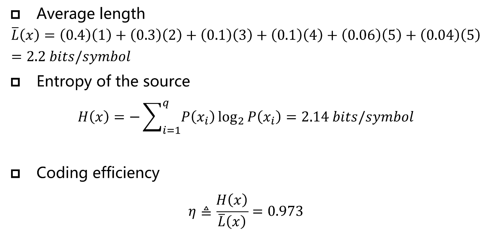
算术编码 (Arithmetic Coding)
- 编码过程:
- 初始化: 将编码区间设为
- 区间划分: 根据信源符号的概率分布，将当前区间划分为若干个子区间，每个子区间的宽度正比于对应符号的概率
- 迭代更新: 读入序列中的下一个符号，选择该符号对应的子区间作为新的编码区间
- 重复: 对新的编码区间重复步骤 2 和 3，直到处理完所有符号
- 输出: 最终得到的编码区间会非常小，选择这个最终区间内的任何一个浮点数，将其转换为二进制小数，就是整个序列的编码结果
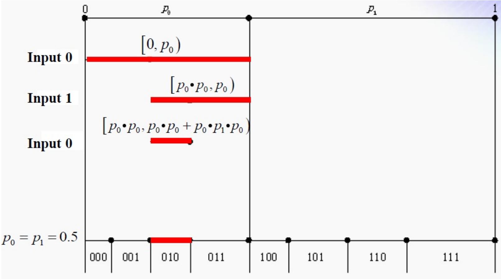
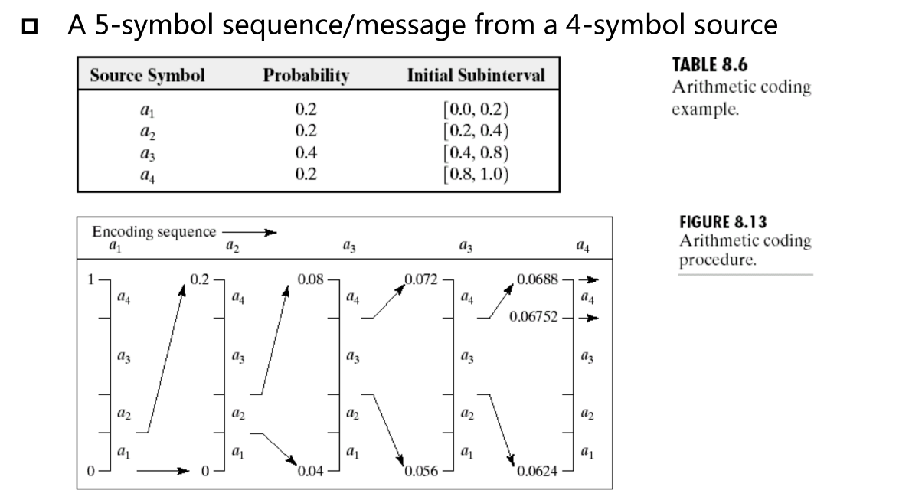
帧内预测编码 (Intra-frame Predictive Coding)
这是预测编码在静态图像中的应用，旨在消除空间冗余。
- DPCM (差分脉冲编码调制 - Differential Pulse Code Modulation): 对于一个具有强相关性的数据序列，不直接编码每个数据本身，而是编码当前数据与上一个数据（或预测值）之间的差值
- 帧内预测的预测器: 预测器 的值由当前像素 周围的、已经完成编解码的邻近像素（通常是左侧、上方、左上方的像素）的线性或非线性组合来确定
帧间预测编码 (Inter-frame Predictive Coding)
这是预测编码在视频压缩中的应用，旨在消除时间冗余。
-
核心思想: 用前一帧（参考帧）来预测当前帧，只对预测不准的差异部分进行编码
-
关键技术:
- 运动估计 (Motion Estimation - ME):
- 目标: 找到当前帧中的某个图像块在参考帧中的最佳匹配位置
- 实现: 通常使用块匹配算法 (Block Matching Algorithm - BMA)
- 将当前帧划分为若干 子块
- 对于每个子块，在参考帧的一个搜索区域内进行搜索，找到与之最相似的匹配块
- 输出: 连接当前块中心和最佳匹配块中心的位移向量，即为运动向量 (Motion Vector - MV)

- 运动补偿 (Motion Compensation - MC):
- 目标: 利用计算出的运动向量（MVs），来构建一个对当前帧的预测帧
- 实现: 根据 MV，将参考帧中对应匹配块的像素，搬移到当前帧的相应位置，形成预测图像
- 作用: 经过运动补偿后的预测，其预测误差会比简单的帧间差值小得多
- 运动估计 (Motion Estimation - ME):
-
编码流程:
- 对象分割: 将视频帧分为静止对象和运动对象
- 运动估计 (ME): 对运动对象，通过块匹配算法找到它们的运动向量 (MVs)
- 运动补偿 (MC): 使用 MVs 构建预测帧
- 预测编码: 计算当前帧与预测帧之间的预测误差帧
- 最终编码内容: 编码器最终需要传输给解码器的是预测误差帧（经过 DCT、量化等处理）和运动向量 (MVs)
JPEG 压缩的核心流程及目标
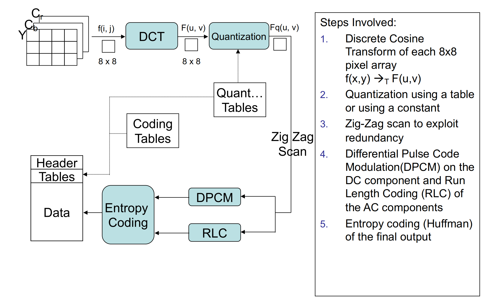
- 第一步: 图像分块与 DCT 变换 (Block Partitioning & DCT)
- 流程: 将 8x8 像素块从空间域转换到频率域，得到一个包含 DC 和 AC 系数的频率矩阵
- 目标: 去相关性，并将图像的能量（主要信息）集中到少数几个低频系数上
- 第二步: 量化 (Quantization)
- 流程: 将频率系数矩阵中的每个值除以量化表中的对应值并取整
- 目标: 有损压缩，通过粗糙化人眼不敏感的高频系数来大幅减少信息量
- 第三步: Zig-Zag 扫描 (Zig-Zag Scan)
- 流程: 按照“之”字形路径将 8x8 的量化系数矩阵重新排列成 1x64 的一维向量
- 目标: 聚集连续的零，将大量为零的高频系数排到向量末尾，为后续高效编码做准备
- 第四步: DC / AC 系数的差分与行程编码 (DPCM for DC & RLE for AC)
- 流程: 对 DC 系数进行差分编码（DPCM），对 AC 系数进行行程编码（RLE）
- 目标: 进一步压缩，利用 DC 系数的块间相关性和 AC 系数中大量的连续零来减少数据
- 第五步: 熵编码 (Entropy Coding)
- 流程: 对前一步产生的数据（如 DPCM 的差值、RLE 的数对）进行哈夫曼编码
- 目标: 无损压缩，利用符号出现频率的不同，为高频符号分配短码字，以最终生成最短的二进制码流
Lecture 7: Image Segmentation
边缘检测算子及特点
基本梯度算子
- 掩模:
- 特点:
- 最简单的梯度近似
- 对噪声非常敏感，定位不精确
Roberts 交叉梯度算子
- 掩模:
- 特点:
- 利用对角线像素差分，对 45° 和 135° 的边缘响应更强
- 计算简单，但同样对噪声敏感
拉普拉斯算子 (Laplacian)
- 掩模:
- 4-邻域:
- 8-邻域:
- 4-邻域:
- 特点:
- 是二阶微分算子，对图像中的精细细节和噪声非常敏感
- 各向同性，响应与边缘方向无关
- 产生双边响应，不适合直接用于边缘提取，但其零交叉特性可用于精确定位边缘
Prewitt 算子
- 掩模:
- 特点:
- 在计算差分前进行了邻域平均，具有一定的平滑噪声的作用
- 对水平和垂直边缘的响应较好
Sobel 算子
- 掩模:
- 特点:
- Prewitt 算子的改进版，对中心像素的邻域给予更高权重
- 平滑效果更好，对噪声的抑制能力比 Prewitt 更强
- 是最常用的一阶梯度算子之一
霍夫变换 (Hough Transform)
- 霍夫变换的四个标准步骤:
- 确定参数空间: 根据要检测的形状，选择合适的参数表示法，如直线的 、圆的
- 创建并初始化累加器数组: 将参数空间离散化，并创建一个所有元素为零的累加器
- 扫描与投票: 遍历二值边缘图像中的每一个值为 1 的点
- 对于每个点，计算出它在参数空间中对应的曲线/曲面，并将该曲线/曲面穿过的所有累加器单元的值加一
- 寻找最大值: 在累加器数组中寻找计数值的峰值，峰值的位置就对应于检测到的几何形状的参数
形态学滤波 (Morphological Filtering)
膨胀 (Dilation)
- 定义: 集合 被结构元素 膨胀的结果，是所有位移 的集合：在这些位移 处，将 关于其原点对称后的 平移 后，与集合 的交集不为空
- 公式:
- 理解: 膨胀可以看作是用结构元素 的中心，扫描整幅图像
- 只要 的任何部分接触到了物体 ，就将 B 的中心点位置标记为前景，最终结果是所有标记点的集合
- 效果:
- 使物体“变胖”或“增长”
- 填充物体内部的孔洞
- 连接断裂的相邻物体
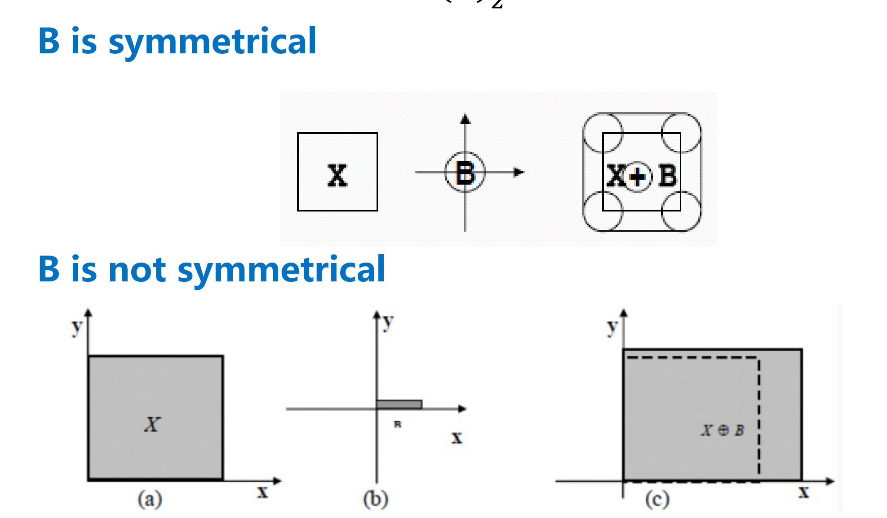
腐蚀 (Erosion)
- 定义: 集合 被结构元素 腐蚀的结果，是所有位移 的集合：在这些位移 处，将 平移 后， 仍然完全被包含在集合 内部
- 公式:
- 理解: 腐蚀可以看作是用结构元素 在物体 的内部滚动
- 只有当 完全处于 的内部时， 的中心点位置才会被标记为前景
- 效果:
- 使物体“变瘦”或“收缩”
- 消除小的、孤立的噪声点
- 分离粘连的物体
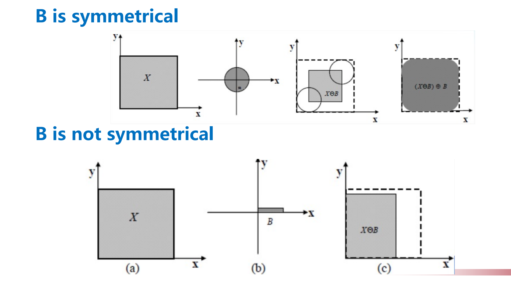

开运算 (Opening)
- 定义: 对集合 先用结构元素 进行腐蚀，然后用同一个 对结果进行膨胀
- 公式:
- 几何解释: 开运算的几何意义可以想象成用结构元素 在物体 的内边界“滚动”，B 能“滚到”的所有区域的并集，就是开运算的结果
- 功能:
- 平滑物体的轮廓 (smoothens the contour)
- 断开狭窄的连接 (breaks narrow linkages)
- 消除细小的突出物和孤立的区域 (eliminates small regions)
- 总体效果: 消除比结构元素小的“亮”细节，同时保持大物体尺寸基本不变
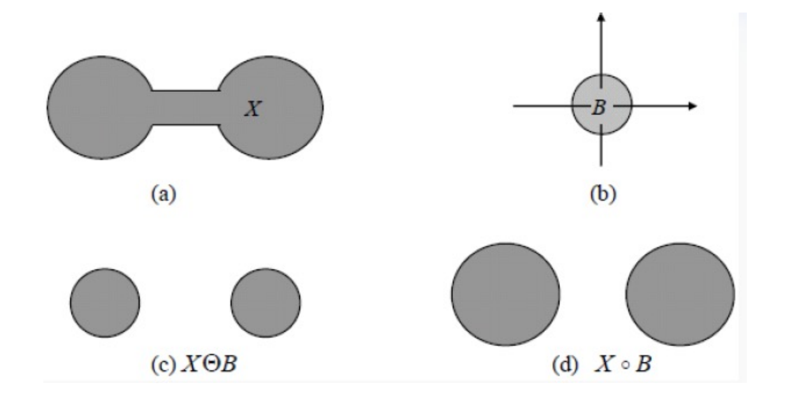

闭运算 (Closing)
- 定义: 对集合 先用结构元素 进行膨胀，然后用同一个 对结果进行腐蚀
- 公式:
- 几何解释: 闭运算的几何意义是让结构元素 在物体 的外边界“滚动”
- 功能:
- 同样能平滑轮廓
- 弥合狭窄的裂缝 (fuses narrow breaks)
- 填充轮廓中的小缺口 (fills in gaps in the contour)
- 消除物体内部的小孔洞 (eliminates small holes)
- 总体效果: 填充比结构元素小的“暗”细节（孔洞、裂缝），同时保持大物体尺寸基本不变
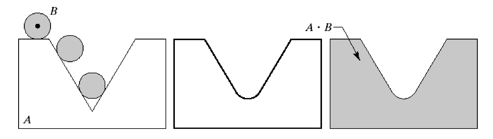
- 开闭运算的联合应用: 连续地进行开运算和闭运算（或者反之），可以有效地去除图像中的微小物体和填充物体内部的小孔洞
- 先进行开运算，可以消除所有小于结构元素的孤立亮噪声点（objects）
- 再对开运算的结果进行闭运算，可以填充掉所有小于结构元素的暗噪声点（holes）

论述题
为了防止大家考试答案完全一致，这里仅提供思路，不提供完整解答。
实际生活中的视频图像系统
- 题干: 请论述在一个典型的流媒体视频应用场景中，一个视频信号从其在物理世界被传感器捕获，到最终在用户端屏幕上呈现并被感知的完整流程中，所涉及到的数字图像处理技术。请详细说明每个关键技术的核心思想、目标，以及它们是如何协同工作，以在有限的带宽条件下为用户提供尽可能高质量的观看体验的。
答题思路框架
总纲: 我们的目标是在有限带宽下实现高质量、流畅的视频体验。所有的技术都是围绕这个核心矛盾展开的。
结构: 严格按照视频信号的生命周期，分为编码端（源端）、传输/分发和**解码端（用户端）**三大块来论述。
引言：概述视频通信系统的挑战与框架
- 开篇: 首先点明现代流媒体视频应用的核心挑战：互联网带宽资源是有限且不稳定的，而用户对视频的清晰度（高质量）和播放的连续性（流畅度）要求越来越高。
- 引出框架: 为了解决这一矛盾，一个完整的视频通信系统应运而生。该系统可以大致分为三个主要阶段：编码与发送、网络传输与分发、接收与解码播放。接下来，将分阶段论述其中所涉及的关键图像处理技术。
第一部分：编码端（源端）—— 数据“瘦身”与打包
目标: 对庞大的原始视频数据进行最大程度的压缩，并为其在复杂网络中的传输做好准备。
-
信号采集与数字化 (Sensing & Digitizing)
- 思想: 将物理世界连续的光信号转换为计算机可以处理的离散数字信号。
- 技术:
- 采样 (Sampling): 在空间和时间上进行离散化。空间采样决定了分辨率，时间采样决定了帧率。
- 量化 (Quantization): 将每个采样点的幅值（亮度/颜色）离散化。
- 目标: 这是所有数字处理的基础，将模拟信号数字化。
-
预处理 (Pre-processing)
- 思想: 在压缩前对画质进行初步优化和清理，以提高后续压缩的效率和质量。
- 技术:
- 去噪 (Denoising): 使用中值滤波、高斯滤波或双边滤波等技术，去除传感器在暗光环境下产生的噪声。目标是避免编码器浪费宝贵的比特去编码噪声。
- 色彩/色调校正: 调整对比度、白平衡等。
-
核心压缩：混合视频编码框架 (Hybrid Video Coding)
-
思想: 综合利用预测编码和变换编码，以最大程度地去除视频数据中存在的各种冗余。这是所有现代视频编码标准（如H.264/AVC, HEVC）的基石。
-
协同工作流程:
a. 去除时间冗余 (Temporal Redundancy) - 帧间预测
- 技术: 运动估计 (ME) 和 运动补偿 (MC)。
- 思想: 视频的相邻帧之间内容高度相似。对于P帧和B帧，通过块匹配算法在已编码的参考帧中寻找当前块的最佳匹配，只记录两者之间的运动向量(MV)。解码端可以根据MV从参考帧“搬运”像素来构建预测帧。
- 目标: 不再传输完整的像素数据，只传输少量的运动信息和后续的残差，极大地减少了数据量。
b. 去除空间冗余 (Spatial Redundancy)
- 技术: 帧内预测 (Intra-prediction) 和 变换编码 (Transform Coding)。
- 思想:
- 对于I帧，或P/B帧中找不到好的匹配块时，使用已编码的当前帧的相邻块像素来预测当前块，消除空间相关性。
- 对于所有帧的预测误差（残差），由于其仍存在空间相关性，使用整数离散余弦变换(DCT) 或离散正弦变换(DST)将其转换到频率域。
- 目标: 将残差信号的能量集中到少数低频系数上，为下一步量化做准备。
c. 去除心理视觉冗余 (Psychovisual Redundancy) - 量化
- 技术: 量化 (Quantization)。
- 思想: 利用人眼对高频细节不敏感的特性。对变换后的低频系数使用精细的量化（小量化步长），对高频系数使用粗糙的量化（大量化步长），甚至直接置零。
- 目标: 这是实现高压缩率的关键有损步骤。通过丢弃人眼不敏感的信息来大幅减少数据量。
d. 去除编码冗余 (Coding Redundancy)
- 技术: 熵编码 (Entropy Coding)，如CABAC (上下文自适应二进制算术编码) 或 CAVLC。
- 思想: 对量化后的系数、运动向量等语法元素，根据其出现概率进行无损压缩。高概率的符号用短码字，低概率的用长码字。
- 目标: 对压缩流程中产生的所有中间符号进行最终的“打包”，使其占用的比特数最少。
-
-
码率控制 (Rate Control)
- 思想: 这是一个宏观调控机制，它监控着编码过程产生的比特数。
- 技术: 根据目标码率和网络带宽的限制，动态地调整量化参数(QP)。网络差时，提高QP（量化更粗），牺牲画质保证流畅；网络好时，降低QP（量化更精细），提升画质。
- 目标: 在满足带宽约束的前提下，实现整体视频质量的最优化。
第二部分：网络传输与分发 —— 自适应策略
目标: 确保码流能够根据用户多变的网络环境，平滑地传输到用户端。
- 思想: “投其所好”，根据用户的网络情况提供最合适的版本。
- 技术: 自适应比特率流媒体 (Adaptive Bitrate Streaming, ABR)，如HLS, DASH协议。
- 协同工作: 编码端会预先将同一个视频源编码成多种不同分辨率和码率的版本（例如 480p, 720p, 1080p）。播放器会持续监测当前的网络下载速度，并向服务器请求最匹配的码率版本进行播放。如果网络变差，就自动切换到低码率版本（可能会降低清晰度），以避免播放卡顿。
- 目标: 实现流畅度和高质量之间的动态平衡。
第三部分：解码端（用户端）—— 复原与呈现
核心挑战: 接收到的压缩码流是为了极致压缩而设计的，它包含了各种失真和伪影。直接解码播放的画质往往不理想。
目标: 高效地从码流中重建视频帧，并对重建后的图像进行修复和优化，最终在用户的屏幕上呈现出最佳的视觉效果。
- 解码 (Decoding)
- 思想:
严格按照编码时约定的规则，进行一系列的逆操作。 - 技术流程:
- 熵解码: 从二进制码流中解析出量化后的系数、运动向量、预测模式等语法元素。
- 反量化与逆变换: 对残差系数进行反量化和逆变换（如IDCT），重建出预测误差块。
- 预测重建:
- 对于帧内编码块 (Intra-block)，根据解码出的预测模式，利用已解码的相邻块像素来构建预测块。
- 对于帧间编码块 (Inter-block)，根据解码出的运动向量，在已解码的参考帧上进行运动补偿，找到匹配块并复制过来，作为预测块。
- 最终重建: 将预测块和预测误差块逐像素相加，得到最终的重建图像块。
- 思想:
-
- 后处理 (Post-processing)
-
思想:
对已经解码完成的图像进行进一步的“美化”和“修复”，以提升主观视觉质量。 -
关键技术:
a. 去块效应滤波 (Deblocking Filter)
- 目标: 消除由于分块编码（特别是粗糙量化）导致的、在8x8或16x16块边界上出现的明显“马赛克”或“网格”效应。
- 核心思想: 这是一种自适应的滤波器。它会智能地分析块边界两侧的像素值。
- 如果边界两边的像素值差异较大，则认为这是一个真实的物体边缘，此时只进行非常轻微的滤波，甚至不滤波，以保护边缘不被模糊。
- 如果边界两边的像素值差异较小，则认为这是一个平坦区域内的块效应，此时进行较强的平滑滤波，以抹平边界痕迹。
- 协同作用: 该技术是现代视频编码标准（如H.264之后）解码环路内部的一个强制模块。这意味着它不仅改善了最终的显示画面，而且滤波后的图像会作为更干净的参考帧，从而提高了后续帧的预测编码效率。
b. 超分辨率 (Super-Resolution)
- 目标: 在用户带宽不足以播放高清视频时，用本地计算能力来补偿画质。
- 核心思想: 这是一项前沿的、基于人工智能/深度学习的技术。通过在海量的高低分辨率图像对上进行训练，AI模型学会了如何从低分辨率图像中“脑补”出高分辨率图像应该有的细节和纹理。
- 协同作用: 流媒体系统可以主动给用户传输一个较低分辨率的码流（如720p），这大大节省了带宽，保证了流畅性。然后，在用户的设备上（如手机、电视），GPU利用超分辨率模型将720p的画面实时放大并锐化到1080p或4K进行显示。这实现了带宽节省和高清体验的兼得，是“计算摄影”思想在视频播放中的完美体现。
c. 错误隐藏 (Error Concealment)
- 目标: 当视频数据包在网络传输中丢失且无法通过信道解码恢复时，尽可能地减少对用户观看体验的影响。
- 核心思想: “猜测”丢失的数据。
- 技术:
- 空间域隐藏: 用丢失块周围的像素进行插值，来填补空白区域。
- 时间域隐藏: 重复使用前一帧在相同位置的图像块来替代丢失的块。对于运动物体，甚至可以利用周围块的运动向量来估计一个运动向量，进行简单的运动补偿来填充。
- 协同作用: 这是保证视频流畅性的最后一道防线。与其因为数据丢失而卡顿或显示绿屏，不如提供一个虽然不完美但视觉上可接受的填充画面，确保播放的连续性。
结论
综上所述，一个现代流媒体视频系统是一个高度复杂的协同工程。它从源头开始，通过混合编码框架对视频信号进行极致的“瘦身”；在传输中，通过自适应码率技术实现了对网络波动的灵活适应；在终端，通过解码后处理技术修复瑕疵并提升观感。正是这些图像处理技术在各个环节的紧密配合与协同工作，才最终使得我们在有限的带宽条件下，能够享受到高质量、流畅的视频体验。
多模态大模型与图像处理技术
- 题干: 论述多模态大模型是如何被应用于解决经典的数字图像处理任务的。请从图像质量评价、图像增强、图像分割等任务中任选其一，具体阐述一种基于多模态大模型的方法。要求描述其基本原理、体系架构，并讨论该方法相比传统方法的优势。
以基于 CLIP-IQA 的图像质量评价为例。
引言：图像质量评价的挑战与范式革新
-
开篇点题: 首先明确图像分割、增强、质量评价等是数字图像处理的核心任务。其中，图像质量评价（IQA）旨在建立能模拟人类主观感知的计算模型，具有重要应用价值。
-
阐述传统方法的瓶颈:
- 传统方法分类: 介绍IQA领域的两大经典技术路线：
- 方法一：基于手工特征的模型（如BRISQUE, NIQE）。它们依赖于“自然场景统计”（NSS）等理论，通过提取图像的统计特征（如梯度分布）来预测质量。缺点是这些手工特征的设计具有局限性，与复杂的人类感知的相关性较弱，性能有限。
- 方法二：基于监督学习的深度模型（如CNNIQA）。它们通过在大型IQA数据集（如KonIQ-10k）上进行端到端的训练，让深度神经网络直接学习从失真图像到人类主观评分（MOS）的映射。缺点是严重依赖昂贵的人工标注数据，且模型的泛化能力是其核心软肋——对于训练集中未曾出现过的失真类型或内容风格，其预测性能会急剧下降。
- 共同局限: 两种传统方法都主要关注图像的技术质量 (look)，如模糊、噪声等，而难以评估更抽象的美学和情感感受 (feel)，缺乏通用性。
- 传统方法分类: 介绍IQA领域的两大经典技术路线：
-
引出新范式：多模态大模型的崛起:
- 提出近年来以CLIP (Contrastive Language-Image Pre-training) 为代表的视觉-语言大模型（VLM）的出现，为解决上述瓶颈提供了全新的思路。
- 阐述CLIP的核心能力：通过在数十亿级别的图文对数据上进行对比学习，CLIP学会了将视觉概念与人类语言的语义映射到同一个高维特征空间中。这使得模型具备了强大的、开放域的图文理解和匹配能力。
- 提出本回答的核心论点：可以利用CLIP强大的视觉-语言先验知识，将IQA问题从一个封闭的“回归”任务，重新定义为一个开放的、更符合人类认知过程的“图文匹配”任务，从而克服传统方法的局限。
核心论述：基于CLIP的无参考图像质量评价 (NR-IQA) 方法详解
我选择图像质量评价 (IQA) 任务，具体阐述一种基于CLIP的无参考方法（以论文《Exploring CLIP for Assessing the Look and Feel of Images》中的CLIP-IQA为蓝本）。
1. 基本原理：从单一回归到“反义词对”语义比较
-
传统IQA原理的再审视: 传统方法试图学习一个函数
f(Image) -> Score。这是一个从高维像素空间到一维分数值的困难映射，且缺乏语义信息。 -
CLIP-IQA的新原理:
- 核心洞见: 人类评价图像时，往往进行的是相对比较和语义描述，例如“这张比那张更清晰”或“这张照片感觉很愉快”。
- 语言的引导作用: CLIP-IQA利用自然语言来定义质量的“锚点”。它不再直接预测一个绝对分数，而是计算图像在一对相反语义概念（如“好”与“坏”）上的相对倾向性。
- 反义词提示对 (Antonym Prompt Pairing): 为了解决单一提示（如“好照片”）可能带来的语言模糊性，该方法强制模型在一个二元选择的框架下进行判断。例如，通过
["Good photo.", "Bad photo."]提示对，将问题转化为“这张照片更接近‘Good photo’的描述，还是更接近‘Bad photo’的描述？”，从而使模型的判断更加稳定和聚焦。
2. 体系架构 (System Architecture)
第一步：CLIP模型基础架构
- 首先，必须清晰地描述CLIP模型本身的结构。可以画一个双塔结构的示意图。
- 图像编码器 (Image Encoder): 通常是一个Vision Transformer (ViT)或ResNet网络。它的功能是接收一张图像作为输入，并将其编码（或称“嵌入”）成一个固定维度的图像特征向量（例如512维）。这个向量可以被看作是图像在多模态特征空间中的“坐标”。
- 文本编码器 (Text Encoder): 一个基于Transformer的文本模型。它的功能是接收一段文本（一个句子或短语）作为输入，并将其编码成一个相同维度的文本特征向量。这个向量是该文本语义在特征空间中的“坐标”。
- 特征空间的对齐: CLIP通过对比学习的训练方式，使得在特征空间中，语义相关联的图像和文本的特征向量在方向上彼此靠近（余弦相似度高），而语义无关的则相互远离。
第二步：CLIP-IQA系统框架
- 在介绍完CLIP的基础上，画出并详细描述CLIP-IQA的完整工作流程图。
graph TD subgraph CLIP-IQA System A[待评价图像 I] --> B[Image Encoder]; B --> C{图像特征 x}; D[正面提示<br>e.g., 'Good photo.'] --> E[Text Encoder]; E --> F{正面文本特征 t₁}; G[负面提示<br>e.g., 'Bad photo.'] --> H[Text Encoder]; H --> I{负面文本特征 t₂}; C --> J(计算余弦相似度 s₁); F --> J; C --> K(计算余弦相似度 s₂); I --> K; J --> L[Softmax]; K --> L; L --> M[最终质量分数 s̄]; end subgraph Key Modification B -- "去除位置编码" --> C; end - 关键修改: 论文中特别提到，为了让模型能处理任意尺寸的输入图像（避免图像缩放本身引入新的失真），他们移除了ResNet图像编码器中的位置编码 (Positional Embedding)。这是一个重要的架构细节。
3. 工作流程 (Workflow)
- 输入: 一张待评价的失真图像
I。 - 图像特征提取: 将图像
I输入到移除了位置编码的CLIP图像编码器中，得到图像特征向量x。 - 文本提示对编码: 定义一对语义相反的文本提示，例如
prompt₁ = "A good quality photo."和prompt₂ = "A bad quality photo."。将这两个提示分别输入到CLIP文本编码器中，得到两个对应的文本特征向量t₁和t₂。 - 图文相似度计算: 分别计算图像特征
x与两个文本特征t₁和t₂的余弦相似度s₁和s₂。s₁反映了图像与“好照片”描述的匹配程度。s₂反映了图像与“坏照片”描述的匹配程度。
- Softmax分数转换: 使用Softmax函数将两个相似度分数转换为一个单一的、归一化的质量分数
s̄。s̄ = e^s₁ / (e^s₁ + e^s₂)- 这个最终分数
s̄介于0和1之间，可以直观地理解为该图像被判断为“好照片”的概率或置信度。
优势分析：新范式与传统方法的对比
-
卓越的泛化能力与多功能性 (Versatility):
- 优势: 这是CLIP-IQA最核心的优势。传统模型通常只能评估单一的、训练时定义好的“整体质量”。而CLIP-IQA通过简单地替换文本提示对，就可以灵活地评估图像的任意维度，无需重新训练模型。
- 举例:
- 评估清晰度: 使用
["A sharp photo.", "A blurry photo."]。 - 评估噪声: 使用
["A clean photo.", "A noisy photo."]。 - 评估美学: 使用
["A beautiful photo.", "An ugly photo."]。 - 评估情感: 使用
["A happy photo.", "A sad photo."]。
- 评估清晰度: 使用
- 结论: 这种灵活性使得CLIP-IQA不仅是一个质量评价工具，更是一个通用的图像感知理解框架。
-
零样本/少样本学习能力 (Zero/Few-shot Learning):
- 优势: CLIP-IQA可以直接利用CLIP模型强大的预训练知识，在没有看过任何一张带有人工质量评分的样本的情况下（零样本），就能对图像质量进行有效的评估。
- 对比: 这彻底摆脱了传统监督学习方法对昂贵、耗时的人工标注IQA数据集的依赖。实验表明，零样本的CLIP-IQA性能已经超过了很多经典的传统方法。
-
更强的可解释性 (Interpretability):
- 优势: 传统方法输出一个分数，过程如同一个黑箱。而CLIP-IQA的评价过程是透明的。通过设计不同的文本提示（例如，关于模糊、噪声、块效应的特定描述），我们可以探查图像与哪种失真描述最匹配，从而不仅知道**“质量多差”，还能分析出“为什么差”**。
-
更贴合人类的感知机制:
- 优势: 该方法通过语言来定义和锚定视觉概念，其内在逻辑更接近人类在评价图像时所依赖的“语义描述”和“相对比较”的思维过程。因此，它的评价结果往往与人类的主观感受（MOS分）有更高的相关性，尤其是在处理复杂的抽象感知（如美学）时。
结论
综上所述，以CLIP-IQA为代表的、基于多模态大模型的方法，通过将图像质量评价重新定义为一个开放域的、基于自然语言引导的图文匹配任务，成功地克服了传统IQA方法在泛化性、灵活性和对标注数据依赖性上的核心瓶颈。它不仅为经典的图像处理任务提供了一个强有力的解决方案，更重要的是，它开创了一种利用大规模预训练模型中的语义先验知识来解决底层视觉问题的新范式，展现了广阔的应用前景。